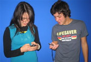

|  | Reportage - I giovani e gli SMSIn Italia circolano più di 36 milioni di cellulari e 89 ragazzi su cento (tra i 15 e i 24 anni) ha almeno un telefonino. Di questi l’83 per cento utilizza abitualmente l’SMS (in inglese Short Message Service) cioè, il sistema dei brevi messaggi. |
This article is saying that 89 per cent of young people between the ages of 5–24 in Italia have at least one mobile phone. Of these, 83% use SMS regularly as a form of communication.
Some Facts| :-* | bacio | :-D | felice |
| [ ] | baci e abbracci | :-v | parlare |
| :-( | triste | :-9 | mi piace |
| :-) | sorridere, sorriso | :"( | sto male |
| Do you use the same symbols in Australia? | |||
I giovani australiani e gli SMS
How has the SMS craze affected young Australians?
Find out some facts and details about the use of SMS as a means of communication by i giovani in Australia.
La situazione è simile in Australia?
Do some research and write up your findings in English as a report in this worksheet_gli_sms.